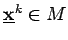
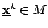

Inhalt Index DeskTop Bronstein

 Optimierung Nichtlineare Optimierung Gradientenverfahren für Probleme mit Ungleichungsrestriktionen Verfahren der projizierten Gradienten
Optimierung Nichtlineare Optimierung Gradientenverfahren für Probleme mit Ungleichungsrestriktionen Verfahren der projizierten Gradienten


Gegeben ist das konvexe Optimierungsproblem
| (18.97) |
mit . Eine zulässige Abstiegsrichtung  im Punkt  wird auf folgende Weise ermittelt: Ist
im Punkt  wird auf folgende Weise ermittelt: Ist  eine zulässige Richtung, dann wird
eine zulässige Richtung, dann wird  gesetzt. Anderenfalls liegt
gesetzt. Anderenfalls liegt  auf dem Rand von M und
auf dem Rand von M und  zeigt aus M hinaus. Mittels einer linearen Abbildung wird der Vektor
zeigt aus M hinaus. Mittels einer linearen Abbildung wird der Vektor  auf eine lineare Teilmannigfaltigkeit des Randes von M projiziert, die von einer Teilmenge der in
auf eine lineare Teilmannigfaltigkeit des Randes von M projiziert, die von einer Teilmenge der in  aktiven Restriktionen gebildet wird. Die Projektion auf eine Kante zeigt die folgende linke Abbildung, die Projektion auf eine Seitenfläche die rechte Abbildung.
aktiven Restriktionen gebildet wird. Die Projektion auf eine Kante zeigt die folgende linke Abbildung, die Projektion auf eine Seitenfläche die rechte Abbildung.
Unter der Voraussetzung der Nichtentartungsbedingung, d.h. für alle sind die Vektoren , linear unabhängig, ist eine solche Projektion gegeben durch
| (18.98) |
Dabei besteht  aus allen den , deren entsprechende Nebenbedingungen die lineare Teilmannigfaltigkeit bilden, in die projiziert werden soll.
aus allen den , deren entsprechende Nebenbedingungen die lineare Teilmannigfaltigkeit bilden, in die projiziert werden soll.